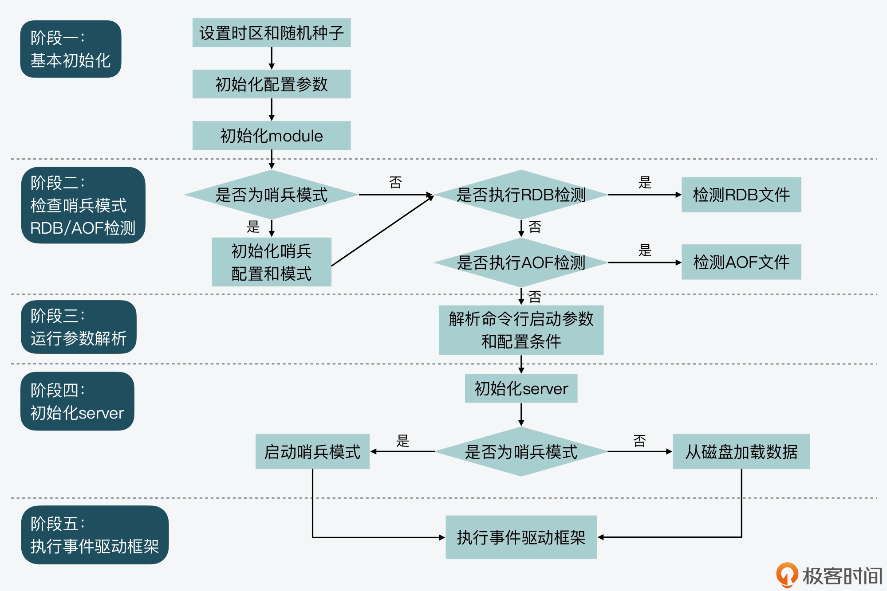
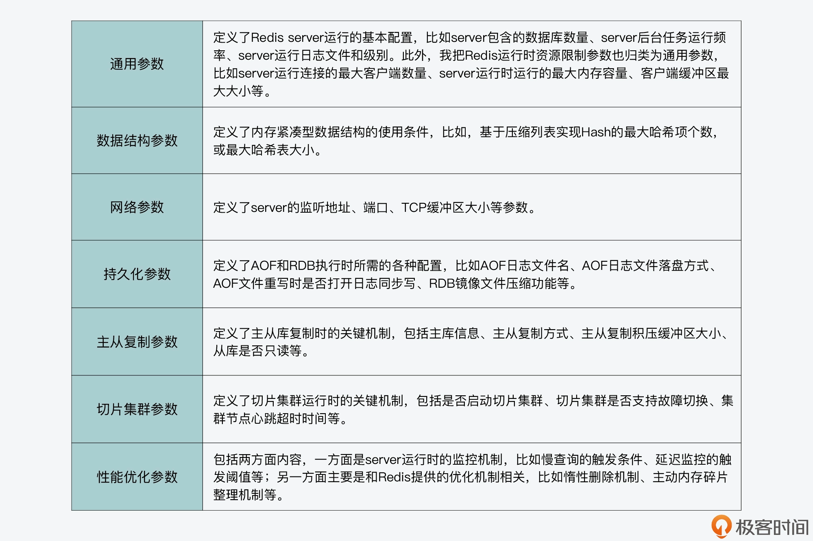
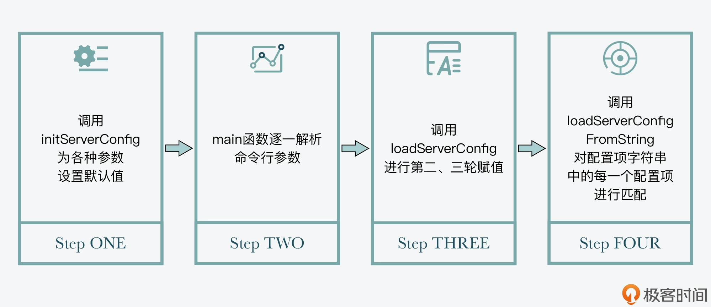

- 00 开篇词 阅读Redis源码能给你带来什么？.md.html
- 01 带你快速攻略Redis源码的整体架构.md.html
- 02 键值对中字符串的实现，用char还是结构体？.md.html
- 03 如何实现一个性能优异的Hash表？.md.html
- 04 内存友好的数据结构该如何细化设计？.md.html
- 05 有序集合为何能同时支持点查询和范围查询？.md.html
- 06 从ziplist到quicklist，再到listpack的启发.md.html
- 07 为什么Stream使用了Radix Tree？.md.html
- 08 Redis server启动后会做哪些操作？.md.html
- 09 Redis事件驱动框架（上）：何时使用select、poll、epoll？.md.html
- 10 Redis事件驱动框架（中）：Redis实现了Reactor模型吗？.md.html
- 11 Redis事件驱动框架（下）：Redis有哪些事件？.md.html
- 12 Redis真的是单线程吗？.md.html
- 13 Redis 6.0多IO线程的效率提高了吗？.md.html
- 14 从代码实现看分布式锁的原子性保证.md.html
- 15 为什么LRU算法原理和代码实现不一样？.md.html
- 16 LFU算法和其他算法相比有优势吗？.md.html
- 17 Lazy Free会影响缓存替换吗？.md.html
- 18 如何生成和解读RDB文件？.md.html
- 19 AOF重写（上）：触发时机与重写的影响.md.html
- 20 AOF重写（下）：重写时的新写操作记录在哪里？.md.html
- 21 主从复制：基于状态机的设计与实现.md.html
- 22 哨兵也和Redis实例一样初始化吗？.md.html
- 23 从哨兵Leader选举学习Raft协议实现（上）.md.html
- 24 从哨兵Leader选举学习Raft协议实现（下）.md.html
- 25 PubSub在主从故障切换时是如何发挥作用的？.md.html
- 26 从Ping-Pong消息学习Gossip协议的实现.md.html
- 27 从MOVED、ASK看集群节点如何处理命令？.md.html
- 28 Redis Cluster数据迁移会阻塞吗？.md.html
- 29 如何正确实现循环缓冲区？.md.html
- 30 如何在系统中实现延迟监控？.md.html
- 31 从Module的实现学习动态扩展功能.md.html
- 32 如何在一个系统中实现单元测试？.md.html
- 结束语 Redis源码阅读，让我们从新开始.md.html
- 捐赠
08 Redis server启动后会做哪些操作？
从这节课开始，我们就来到了课程的第二个模块，在这个模块里，我会带你了解和学习与 Redis 实例运行相关方面的知识，包括 Redis server 的启动过程、基于事件驱动框架的网络通信机制以及 Redis 线程执行模型。今天，我们先来学习下 Redis server 的启动过程。
我们知道，main 函数是 Redis 整个运行程序的入口，并且 Redis 实例在运行时，也会从这个 main 函数开始执行。同时，由于 Redis 是典型的 Client-Server 架构，一旦 Redis 实例开始运行，Redis server 也就会启动，而 main 函数其实也会负责 Redis server 的启动运行。
我在【第 1 讲】给你介绍过 Redis 源码的整体架构。其中，Redis 运行的基本控制逻辑是在server.c文件中完成的，而 main 函数就是在 server.c 中。
你平常在设计或实现一个网络服务器程序时，可能会遇到一个问题，那就是服务器启动时，应该做哪些操作、有没有一个典型的参考实现。所以今天这节课，我就从 main 函数开始，给你介绍下 Redis server 是如何在 main 函数中启动并完成初始化的。通过这节课内容的学习，你可以掌握 Redis 针对以下三个问题的实现思路：
- Redis server 启动后具体会做哪些初始化操作？
- Redis server 初始化时有哪些关键配置项？
- Redis server 如何开始处理客户端请求？
并且，Redis server 设计和实现的启动过程也具有一定的代表性，你在学习后，就可以把其中的关键操作推而广之，用在自己的网络服务器实现中。
好了，接下来，我们先从 main 函数开始，来了解下它在 Redis server 中的设计实现思路。
main 函数：Redis server 的入口
一般来说，一个使用 C 开发的系统软件启动运行的代码逻辑，都是实现在了 main 函数当中，所以在正式了解 Redis 中 main 函数的实现之前，我想先给你分享一个小 Tips，就是你在阅读学习一个系统的代码时，可以先找下 main 函数，看看它的执行过程。
那么，对于 Redis 的 main 函数来说，我把它执行的工作分成了五个阶段。
阶段一：基本初始化
在这个阶段，main 函数主要是完成一些基本的初始化工作，包括设置 server 运行的时区、设置哈希函数的随机种子等。这部分工作的主要调用函数如下所示：
//设置时区
setlocale(LC_COLLATE,"");
tzset();
...
//设置随机种子
char hashseed[16];
getRandomHexChars(hashseed,sizeof(hashseed));
dictSetHashFunctionSeed((uint8_t*)hashseed);
这里，你需要注意的是，在 main 函数的开始部分，有一段宏定义覆盖的代码。这部分代码的作用是，如果定义了 REDIS_TEST 宏定义，并且 Redis server 启动时的参数符合测试参数，那么 main 函数就会执行相应的测试程序。
这段宏定义的代码如以下所示，其中的示例代码就是调用 ziplist 的测试函数 ziplistTest：
#ifdef REDIS_TEST
//如果启动参数有test和ziplist，那么就调用ziplistTest函数进行ziplist的测试
if (argc == 3 && !strcasecmp(argv[1], "test")) {
if (!strcasecmp(argv[2], "ziplist")) {
return ziplistTest(argc, argv);
}
...
}
#endif
阶段二：检查哨兵模式，并检查是否要执行 RDB 检测或 AOF 检测
Redis server 启动后，可能是以哨兵模式运行的，而哨兵模式运行的 server 在参数初始化、参数设置，以及 server 启动过程中要执行的操作等方面，与普通模式 server 有所差别。所以，main 函数在执行过程中需要根据 Redis 配置的参数，检查是否设置了哨兵模式。
如果有设置哨兵模式的话，main 函数会调用 initSentinelConfig 函数，对哨兵模式的参数进行初始化设置，以及调用 initSentinel 函数，初始化设置哨兵模式运行的 server。有关哨兵模式运行的 Redis server 相关机制，我会在第 21 讲中给你详细介绍。
下面的代码展示了 main 函数中对哨兵模式的检查，以及对哨兵模式的初始化，你可以看下：
...
//判断server是否设置为哨兵模式
if (server.sentinel_mode) {
initSentinelConfig(); //初始化哨兵的配置
initSentinel(); //初始化哨兵模式
}
...
除了检查哨兵模式以外，main 函数还会检查是否要执行 RDB 检测或 AOF 检查，这对应了实际运行的程序是 redis-check-rdb 或 redis-check-aof。在这种情况下，main 函数会调用 redis_check_rdb_main 函数或 redis_check_aof_main 函数，检测 RDB 文件或 AOF 文件。你可以看看下面的代码，其中就展示了 main 函数对这部分内容的检查和调用：
...
//如果运行的是redis-check-rdb程序，调用redis_check_rdb_main函数检测RDB文件
if (strstr(argv[0],"redis-check-rdb") != NULL)
redis_check_rdb_main(argc,argv,NULL);
//如果运行的是redis-check-aof程序，调用redis_check_aof_main函数检测AOF文件
else if (strstr(argv[0],"redis-check-aof") != NULL)
redis_check_aof_main(argc,argv);
...
阶段三：运行参数解析
在这一阶段，main 函数会对命令行传入的参数进行解析，并且调用 loadServerConfig 函数，对命令行参数和配置文件中的参数进行合并处理，然后为 Redis 各功能模块的关键参数设置合适的取值，以便 server 能高效地运行。
阶段四：初始化 server
在完成对运行参数的解析和设置后，main 函数会调用 initServer 函数，对 server 运行时的各种资源进行初始化工作。这主要包括了 server 资源管理所需的数据结构初始化、键值对数据库初始化、server 网络框架初始化等。
而在调用完 initServer 后，main 函数还会再次判断当前 server 是否为哨兵模式。如果是哨兵模式，main 函数会调用 sentinelIsRunning 函数，设置启动哨兵模式。否则的话，main 函数会调用 loadDataFromDisk 函数，从磁盘上加载 AOF 或者是 RDB 文件，以便恢复之前的数据。
阶段五：执行事件驱动框架
为了能高效处理高并发的客户端连接请求，Redis 采用了事件驱动框架，来并发处理不同客户端的连接和读写请求。所以，main 函数执行到最后时，会调用 aeMain 函数进入事件驱动框架，开始循环处理各种触发的事件。
我把刚才介绍的五个阶段涉及到的关键操作，画在了下面的图中，你可以再回顾下。

那么，在这五个阶段当中，阶段三、四和五其实就包括了 Redis server 启动过程中的关键操作。所以接下来，我们就来依次学习下这三个阶段中的主要工作。
Redis 运行参数解析与设置
我们知道，Redis 提供了丰富的功能，既支持多种键值对数据类型的读写访问，还支持数据持久化保存、主从复制、切片集群等。而这些功能的高效运行，其实都离不开相关功能模块的关键参数配置。
举例来说，Redis 为了节省内存，设计了内存紧凑型的数据结构来保存 Hash、Sorted Set 等键值对类型。但是在使用了内存紧凑型的数据结构之后，如果往数据结构存入的元素个数过多或元素过大的话，键值对的访问性能反而会受到影响。因此，为了平衡内存使用量和系统访问性能，我们就可以通过参数，来设置和调节内存紧凑型数据结构的使用条件。
也就是说，掌握这些关键参数的设置，可以帮助我们提升 Redis 实例的运行效率。
不过，Redis 的参数有很多，我们无法在一节课中掌握所有的参数设置。所以下面，我们可以先来学习下 Redis 的主要参数类型，这样就能对各种参数形成一个全面的了解。同时，我也会给你介绍一些和 server 运行关系密切的参数及其设置方法，以便你可以配置好这些参数，让 server 高效运行起来。
Redis 的主要参数类型
首先，Redis 运行所需的各种参数，都统一定义在了server.h文件的 redisServer 结构体中。根据参数作用的范围，我把各种参数划分为了七大类型，包括通用参数、数据结构参数、网络参数、持久化参数、主从复制参数、切片集群参数、性能优化参数。具体你可以参考下面表格中的内容。

这样，如果你能按照上面的划分方法给 Redis 参数进行归类，那么你就可以发现，这些参数实际和 Redis 的主要功能机制是相对应的。所以，如果你要深入掌握这些参数的典型配置值，你就需要对相应功能机制的工作原理有所了解。我在接下来的课程中，也会在介绍 Redis 功能模块设计的同时，带你了解下其相应的典型参数配置。
好，现在我们就了解了 Redis 的七大参数类型，以及它们基本的作用范围，那么下面我们就接着来学习下，Redis 是如何针对这些参数进行设置的。
Redis 参数的设置方法
Redis 对运行参数的设置实际上会经过三轮赋值，分别是默认配置值、命令行启动参数，以及配置文件配置值。
首先，Redis 在 main 函数中会先调用 initServerConfig 函数，为各种参数设置默认值。参数的默认值统一定义在 server.h 文件中，都是以 CONFIG_DEFAULT 开头的宏定义变量。下面的代码显示的是部分参数的默认值，你可以看下。
#define CONFIG_DEFAULT_HZ 10 //server后台任务的默认运行频率
#define CONFIG_MIN_HZ 1 // server后台任务的最小运行频率
#define CONFIG_MAX_HZ 500 // server后台任务的最大运行频率
#define CONFIG_DEFAULT_SERVER_PORT 6379 //server监听的默认TCP端口
#define CONFIG_DEFAULT_CLIENT_TIMEOUT 0 //客户端超时时间，默认为0，表示没有超时限制
在 server.h 中提供的默认参数值，一般都是典型的配置值。因此，如果你在部署使用 Redis 实例的过程中，对 Redis 的工作原理不是很了解，就可以使用代码中提供的默认配置。
当然，如果你对 Redis 各功能模块的工作机制比较熟悉的话，也可以自行设置运行参数。你可以在启动 Redis 程序时，在命令行上设置运行参数的值。比如，如果你想将 Redis server 监听端口从默认的 6379 修改为 7379，就可以在命令行上设置 port 参数为 7379，如下所示：
./redis-server --port 7379
这里，你需要注意的是，Redis 的命令行参数设置需要使用两个减号“–”来表示相应的参数名，否则的话，Redis 就无法识别所设置的运行参数。
Redis 在使用 initServerConfig 函数对参数设置默认配置值后，接下来，main 函数就会对 Redis 程序启动时的命令行参数进行逐一解析。
main 函数会把解析后的参数及参数值保存成字符串，接着，main 函数会调用 loadServerConfig 函数进行第二和第三轮的赋值。以下代码显示了 main 函数对命令行参数的解析，以及调用 loadServerConfig 函数的过程，你可以看下。
int main(int argc, char **argv) {
…
//保存命令行参数
for (j = 0; j < argc; j++) server.exec_argv[j] = zstrdup(argv[j]);
…
if (argc >= 2) {
…
//对每个运行时参数进行解析
while(j != argc) {
…
}
…
//
loadServerConfig(configfile,options);
}
这里你要知道的是，loadServerConfig 函数是在config.c文件中实现的，该函数是以 Redis 配置文件和命令行参数的解析字符串为参数，将配置文件中的所有配置项读取出来，形成字符串。紧接着，loadServerConfig 函数会把解析后的命令行参数，追加到配置文件形成的配置项字符串。
这样一来，配置项字符串就同时包含了配置文件中设置的参数，以及命令行设置的参数。
最后，loadServerConfig 函数会进一步调用 loadServerConfigFromString 函数，对配置项字符串中的每一个配置项进行匹配。一旦匹配成功，loadServerConfigFromString 函数就会按照配置项的值设置 server 的参数。
以下代码显示了 loadServerConfigFromString 函数的部分内容。这部分代码是使用了条件分支，来依次比较配置项是否是“timeout”和“tcp-keepalive”，如果匹配上了，就将 server 参数设置为配置项的值。
同时，代码还会检查配置项的值是否合理，比如是否小于 0。如果参数值不合理，程序在运行时就会报错。另外对于其他的配置项，loadServerConfigFromString 函数还会继续使用 elseif 分支进行判断。
loadServerConfigFromString(char *config) {
…
//参数名匹配，检查参数是否为“timeout“
if (!strcasecmp(argv[0],"timeout") && argc == 2) {
//设置server的maxidletime参数
server.maxidletime = atoi(argv[1]);
//检查参数值是否小于0，小于0则报错
if (server.maxidletime < 0) {
err = "Invalid timeout value"; goto loaderr;
}
}
//参数名匹配，检查参数是否为“tcp-keepalive“
else if (!strcasecmp(argv[0],"tcp-keepalive") && argc == 2) {
//设置server的tcpkeepalive参数
server.tcpkeepalive = atoi(argv[1]);
//检查参数值是否小于0，小于0则报错
if (server.tcpkeepalive < 0) {
err = "Invalid tcp-keepalive value"; goto loaderr;
}
}
…
}
好了，到这里，你应该就了解了 Redis server 运行参数配置的步骤，我也画了一张图，以便你更直观地理解这个过程。

在完成参数配置后，main 函数会开始调用 initServer 函数，对 server 进行初始化。所以接下来，我们继续来了解 Redis server 初始化时的关键操作。
initServer：初始化 Redis server
Redis server 的初始化操作，主要可以分成三个步骤。
- 第一步，Redis server 运行时需要对多种资源进行管理。
比如说，和 server 连接的客户端、从库等，Redis 用作缓存时的替换候选集，以及 server 运行时的状态信息，这些资源的管理信息都会在 initServer 函数中进行初始化。
我给你举个例子，initServer 函数会创建链表来分别维护客户端和从库，并调用 evictionPoolAlloc 函数（在evict.c中）采样生成用于淘汰的候选 key 集合。同时，initServer 函数还会调用 resetServerStats 函数（在 server.c 中）重置 server 运行状态信息。
- 第二步，在完成资源管理信息的初始化后，initServer 函数会对 Redis 数据库进行初始化。
因为一个 Redis 实例可以同时运行多个数据库，所以 initServer 函数会使用一个循环，依次为每个数据库创建相应的数据结构。
这个代码逻辑是实现在 initServer 函数中，它会为每个数据库执行初始化操作，包括创建全局哈希表，为过期 key、被 BLPOP 阻塞的 key、将被 PUSH 的 key 和被监听的 key 创建相应的信息表。
for (j = 0; j < server.dbnum; j++) {
//创建全局哈希表
server.db[j].dict = dictCreate(&dbDictType,NULL);
//创建过期key的信息表
server.db[j].expires = dictCreate(&keyptrDictType,NULL);
//为被BLPOP阻塞的key创建信息表
server.db[j].blocking_keys = dictCreate(&keylistDictType,NULL);
//为将执行PUSH的阻塞key创建信息表
server.db[j].ready_keys = dictCreate(&objectKeyPointerValueDictType,NULL);
//为被MULTI/WATCH操作监听的key创建信息表
server.db[j].watched_keys = dictCreate(&keylistDictType,NULL);
…
}
- 第三步，initServer 函数会为运行的 Redis server 创建事件驱动框架，并开始启动端口监听，用于接收外部请求。
注意，为了高效处理高并发的外部请求，initServer 在创建的事件框架中，针对每个监听 IP 上可能发生的客户端连接，都创建了监听事件，用来监听客户端连接请求。同时，initServer 为监听事件设置了相应的处理函数 acceptTcpHandler。
这样一来，只要有客户端连接到 server 监听的 IP 和端口，事件驱动框架就会检测到有连接事件发生，然后调用 acceptTcpHandler 函数来处理具体的连接。你可以参考以下代码中展示的处理逻辑：
//创建事件循环框架
server.el = aeCreateEventLoop(server.maxclients+CONFIG_FDSET_INCR);
…
//开始监听设置的网络端口
if (server.port != 0 &&
listenToPort(server.port,server.ipfd,&server.ipfd_count) == C_ERR)
exit(1);
…
//为server后台任务创建定时事件
if (aeCreateTimeEvent(server.el, 1, serverCron, NULL, NULL) == AE_ERR) {
serverPanic("Can't create event loop timers.");
exit(1);
}
…
//为每一个监听的IP设置连接事件的处理函数acceptTcpHandler
for (j = 0; j < server.ipfd_count; j++) {
if (aeCreateFileEvent(server.el, server.ipfd[j], AE_READABLE,
acceptTcpHandler,NULL) == AE_ERR)
{ … }
}
那么到这里，Redis server 在完成运行参数设置和初始化后，就可以开始处理客户端请求了。为了能持续地处理并发的客户端请求，server 在 main 函数的最后，会进入事件驱动循环机制。而这就是接下来，我们要了解的事件驱动框架的执行过程。
执行事件驱动框架
事件驱动框架是 Redis server 运行的核心。该框架一旦启动后，就会一直循环执行，每次循环会处理一批触发的网络读写事件。关于事件驱动框架本身的设计思想与实现方法，我会在第 9 至 11 讲给你具体介绍。这节课，我们主要是学习 Redis 入口的 main 函数中，是如何转换到事件驱动框架进行执行的。
其实，进入事件驱动框架开始执行并不复杂，main 函数直接调用事件框架的主体函数 aeMain（在ae.c文件中）后，就进入事件处理循环了。
当然，在进入事件驱动循环前，main 函数会分别调用 aeSetBeforeSleepProc 和 aeSetAfterSleepProc 两个函数，来设置每次进入事件循环前 server 需要执行的操作，以及每次事件循环结束后 server 需要执行的操作。下面代码显示了这部分的执行逻辑，你可以看下。
int main(int argc, char **argv) {
…
aeSetBeforeSleepProc(server.el,beforeSleep);
aeSetAfterSleepProc(server.el,afterSleep);
aeMain(server.el);
aeDeleteEventLoop(server.el);
...
}
小结
今天这节课，我们通过 server.c 文件中 main 函数的设计和实现思路，了解了 Redis server 启动后的五个主要阶段。在这五个阶段中，运行参数解析、server 初始化和执行事件驱动框架则是 Redis sever 启动过程中的三个关键阶段。所以相应的，我们需要重点关注以下三个要点。
第一，main 函数是使用 initServerConfig 给 server 运行参数设置默认值，然后会解析命令行参数，并通过 loadServerConfig 读取配置文件参数值，将命令行参数追加至配置项字符串。最后，Redis 会调用 loadServerConfigFromString 函数，来完成配置文件参数和命令行参数的设置。
第二，在 Redis server 完成参数设置后，initServer 函数会被调用，用来初始化 server 资源管理的主要结构，同时会初始化数据库启动状态，以及完成 server 监听 IP 和端口的设置。
第三，一旦 server 可以接收外部客户端的请求后，main 函数会把程序的主体控制权，交给事件驱动框架的入口函数，也就 aeMain 函数。aeMain 函数会一直循环执行，处理收到的客户端请求。到此为止，server.c 中的 main 函数功能就已经全部完成了，程序控制权也交给了事件驱动循环框架，Redis 也就可以正常处理客户端请求了。
实际上，Redis server 的启动过程从基本的初始化操作，到命令行和配置文件的参数解析设置，再到初始化 server 各种数据结构，以及最后的执行事件驱动框架，这是一个典型的网络服务器执行过程，你在开发网络服务器时，就可以作为参考。
而且，掌握了启动过程中的初始化操作，还可以帮你解答一些使用中的疑惑。比如，Redis 启动时是先读取 RDB 文件，还是先读取 AOF 文件。如果你了解了 Redis server 的启动过程，就可以从 loadDataFromDisk 函数中看到，Redis server 会先读取 AOF；而如果没有 AOF，则再读取 RDB。
所以，掌握 Redis server 启动过程，有助于你更好地了解 Redis 运行细节，这样当你遇到问题时，就知道还可以从启动过程中去溯源 server 的各种初始状态，从而助力你更好地解决问题。
每课一问
Redis 源码的 main 函数在调用 initServer 函数之前，会执行如下的代码片段，你知道这个代码片段的作用是什么吗？
int main(int argc, char **argv) {
...
server.supervised = redisIsSupervised(server.supervised_mode);
int background = server.daemonize && !server.supervised;
if (background) daemonize();
...
}
欢迎在留言区分享你的答案和见解，我们一起交流讨论。如果觉得有收获，也欢迎你把今天的内容分享给更多的朋友。
© 2019 - 2023 Liangliang Lee. Powered by gin and hexo-theme-book.